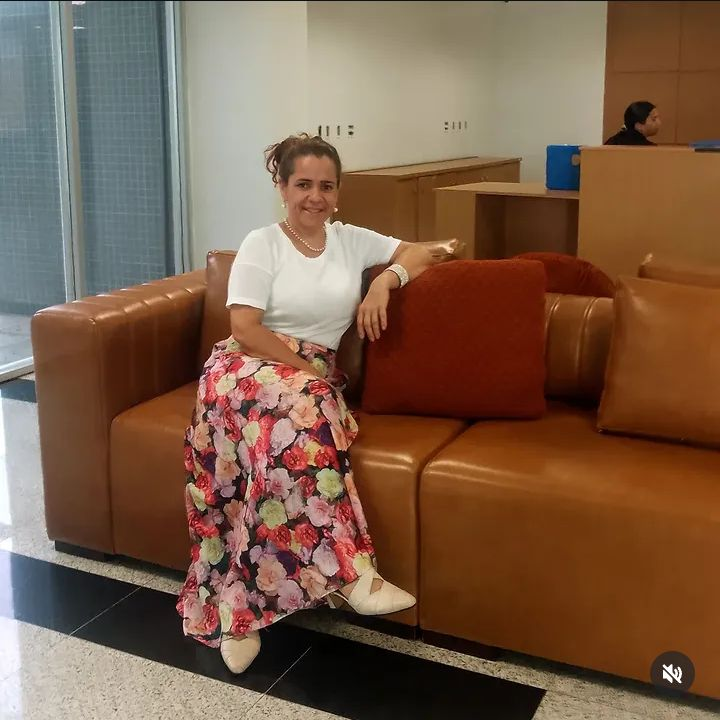

A psicoterapia é um caminho de autoconhecimento, acolhimento e transformação. Vamos juntos?
"Você não precisa ter todas as respostas agora. Está tudo bem dar um passo de cada vez."

Compreenda suas emoções, padrões e histórias.
Desenvolva habilidades para lidar com desafios da vida.
Construa uma vida com mais sentido e leveza.
Pequenas mudanças que geram grandes resultados.
Espaço de escuta e acolhimento para você compreender o que sente e viver com mais leveza e consciência.
Apoio para lidar com inseguranças, emoções intensas e os desafios dessa fase tão importante.
Apoio para pais e mães que desejam fortalecer vínculos e lidar melhor com os desafios da educação.
Trabalho com a abordagem da Terapia Cognitivo-Comportamental (TCC), com foco em promover mudanças reais no seu dia a dia.